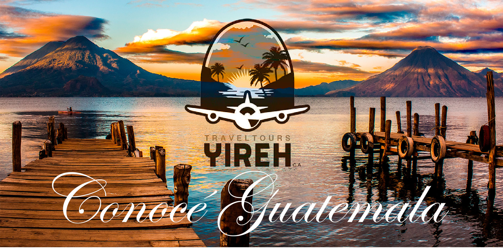
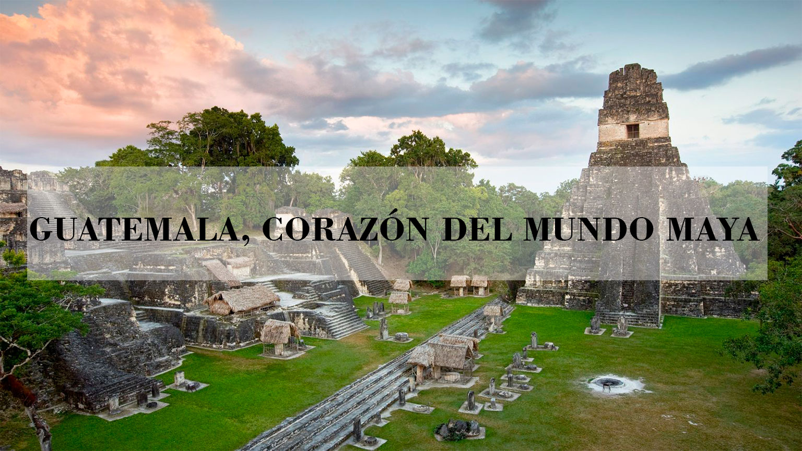
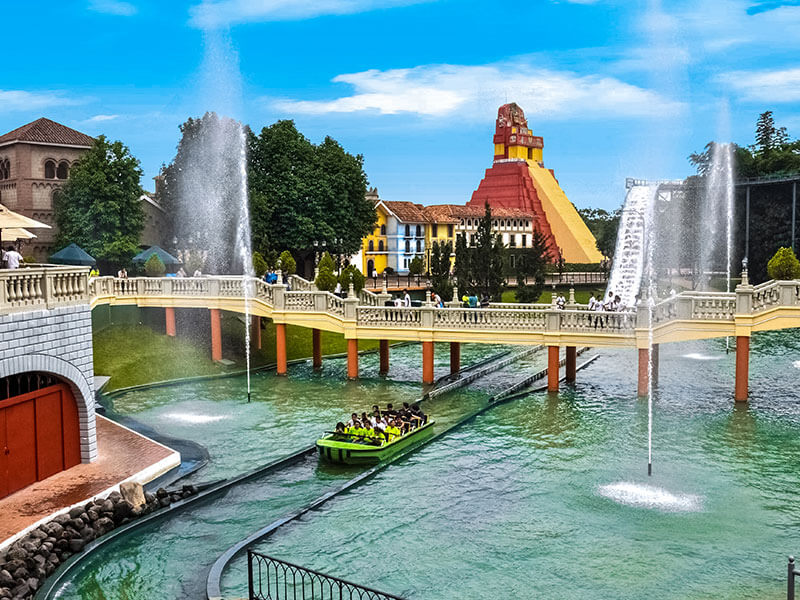
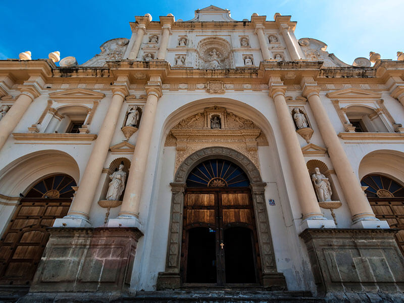
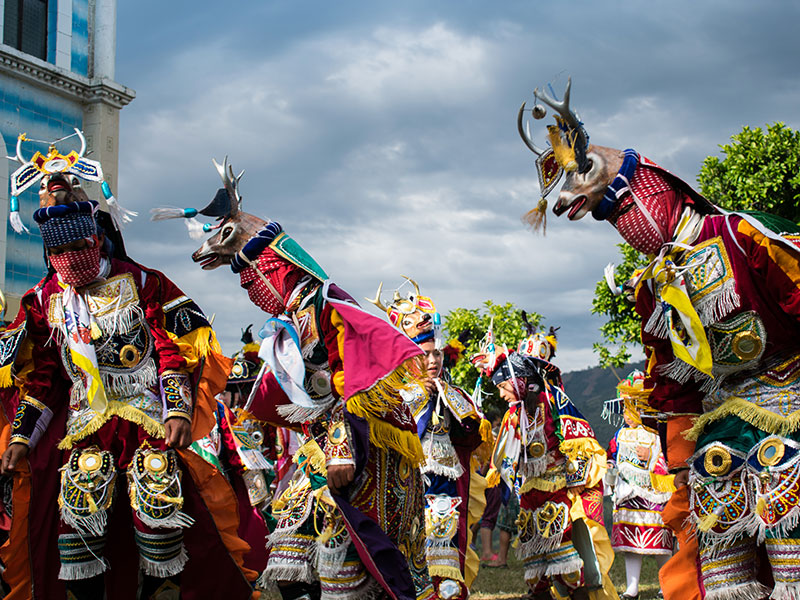

|
|  |
|  |
Viva, mágica, mística y ancestral. Su historia se remonta a cuatro mil años, cuando emergió la civilización maya, cuyo legado perdura hoy en día con las tradiciones y cultura de su gente. Guatemala es un país de extraordinaria riqueza cultural y natural y con una ubicación geográfica privilegiada. Las distancias de lugar a lugar son cortas, lo que permite visitar varias regiones en un mismo viaje. Es un país único, de aventura, inolvidable, entre su pasado y presente, además de la diversidad de actividades que ofrece al visitante. Conocido como el país de la eterna primavera, goza de un clima agradable que permite visitarlo en cualquier época del año. Además, ofrece varias posibilidades de acceso desde cualquier parte del mundo, contando con dos aeropuertos internacionales: La Aurora, situado en la ciudad capital; y Mundo Maya, ubicado en el departamento de Petén.
|
|  | Las actividades de entretenimiento que puedes realizar en Guatemala son compras, visitas a parques temáticos y vida nocturna.
|
La religiosidad de los guatemaltecos se respira en cada momento que se vive en Guatemala, con el sonido de campanas de iglesias en los pequeños poblados que llaman a las familias para asistir a las misas y actividades de la iglesia o bien los Xamanes que practican su religiosidad acompañados de naturaleza pero compartiendo sus tradiciones y costumbres con su gente. El Turismo Religioso de Guatemala es una de las más ricas experiencias para los extranjeros ya que se puede encontrar en casi todo el país. Además su rica historia envuelve a los visitantes en un aire místico, creando una experiencia única. Se puede participar en rutas de peregrinaje para los católicos, tales como la del hermano Pedro de Betancourt quien fue un religioso de los días de la Colonia y quien fue canonizado en el año 2002. Por su parte, la Semana Santa en Guatemala es una sorpresiva mezcla de símbolos, sonidos y aromas. Coloridas alfombras hechas de aserrín teñido, flores, follaje y granos bajo el perfume del incienso, marcan el camino, en ciudades y pueblos, de las procesiones típicas de la época. La Semana Santa se ha convertido en uno de los atractivos turísticos y religiosos más recordados y buscados por turistas de todo el mundo. |
 |
|  | Guatemala es un país rico en cultura y abundante naturaleza con atractivos que invitan a los visitantes a conocer toda una concepción integradora de un legado ancestral, místico y holístico; capaz de incitar al visitante a disfrutar de los componentes históricos, armónicos, espirituales, naturales y vivenciales en las comunidades del país. Estas experiencias son combinadas con la animación y hospitalidad de la gente, quienes preservan el patrimonio cultural y natural, compartiendo su estilo de vida, trabajo en armonía, conocimientos tradicionales y costumbres. Guatemala invita a conocer la cultura por medio de la riqueza propia de los pueblos indígenas, motivando al visitante a conocer la cosmovisión de los pueblos y a disfrutar de la naturaleza combinado con los microclimas, los escenarios pintorescos, la riqueza exuberante de flora y fauna, y los senderos que ofrecen una aventura inigualable. El país cuenta con una diversidad de actividades tradicionales y no convencionales propias de la dinámica sociocultural de las poblaciones indígenas las cuales se constituyen en destinos turísticos, dándose así un relacionamiento entre el turista y el destino mismo. |
}